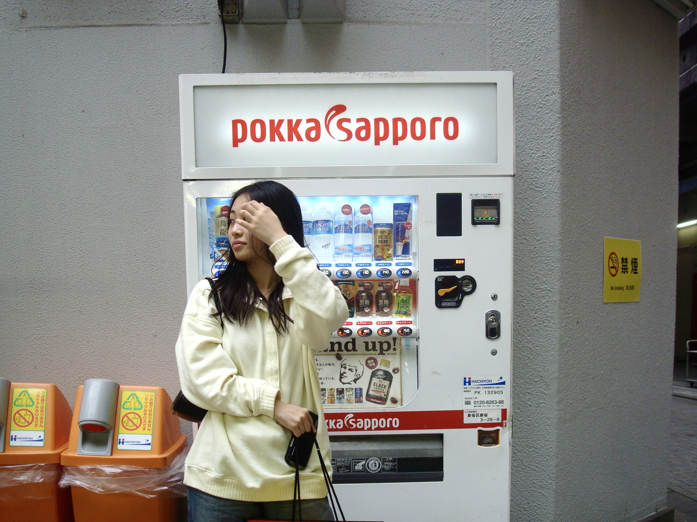
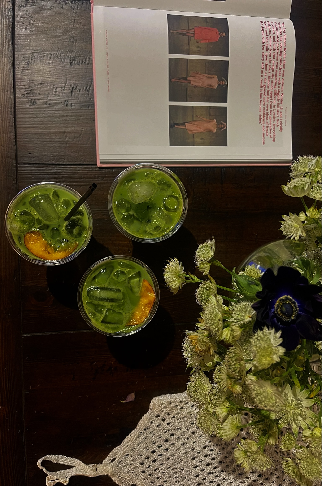
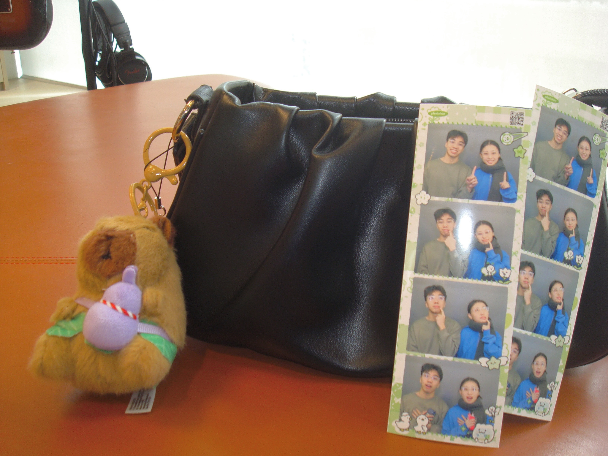
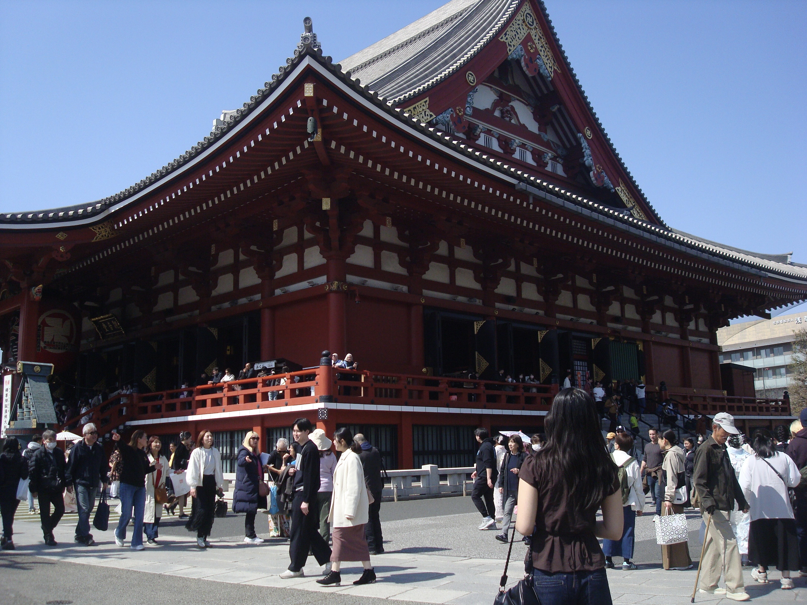

OwlRecruit
Next.jsTypeScriptSupabasePostgreSQLTailwind
- Recruitment platform with 4,000+ active student users
- Real-time application tracking & status updates
I'm a CS and Applied Math student at Rice University passionate about AI, full-stack development, and teaching as a TA.
I've interned at Visa and INEMSOFT, done research at Rice's Treangen Lab and Clemson University, and I love building things that actually get used.




A few favorites — products people actually use.
Always happy to chat about projects, research, or a good cup of coffee.